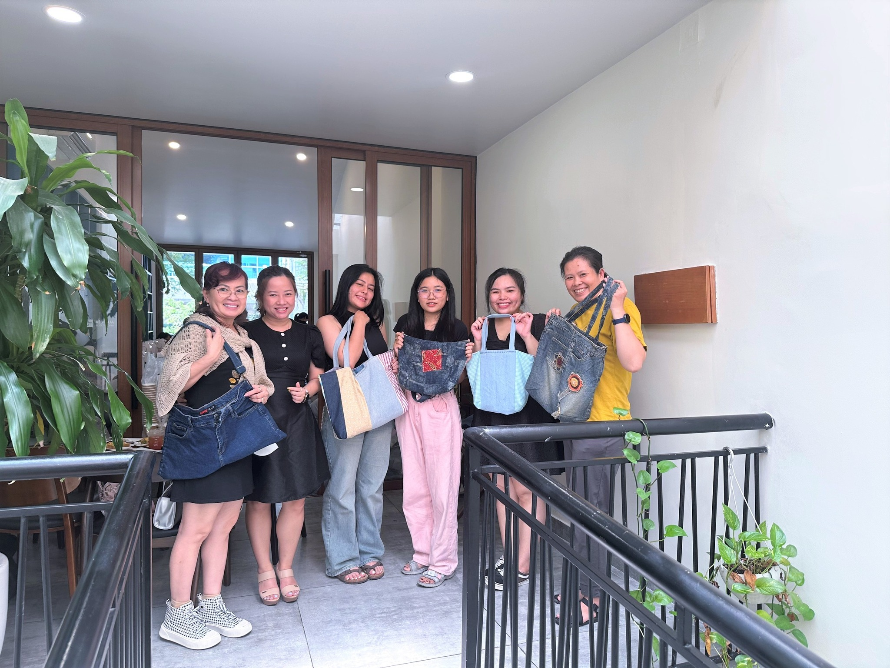
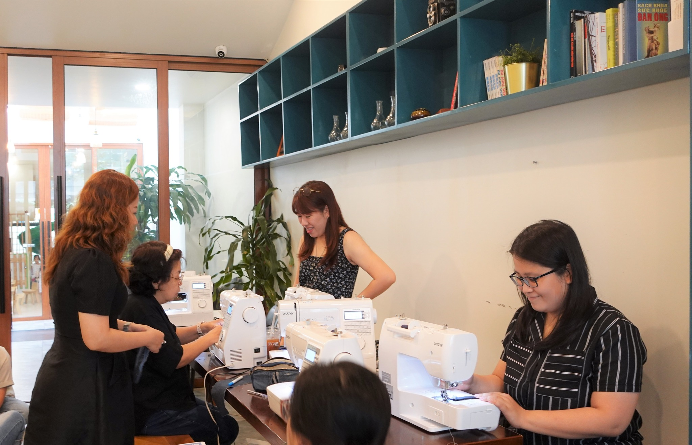
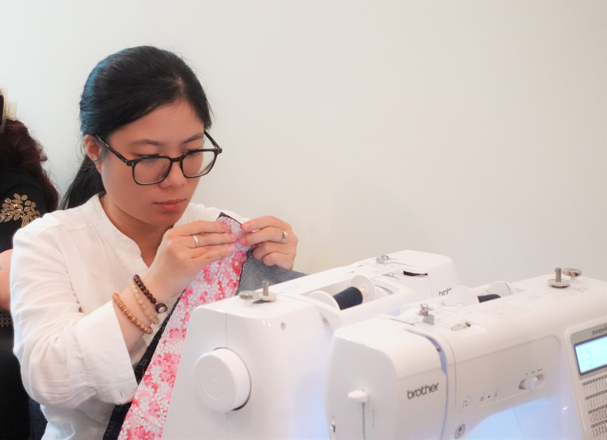
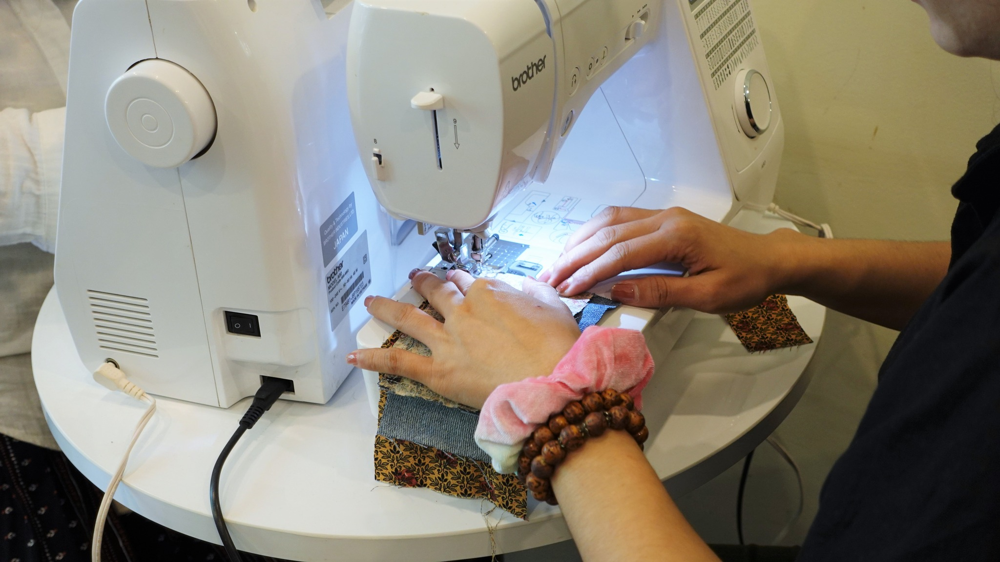
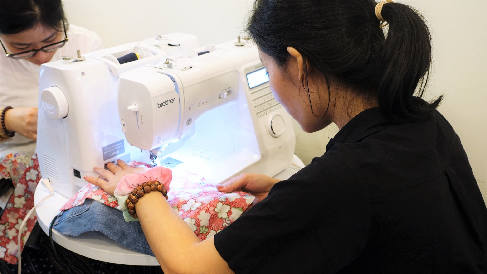

RECAP: WORKSHOP TÁI CHẾ JEANS TẠI HỒ CHÍ MINH

Tuần vừa qua, workshop tái chế jeans của Brother đã diễn ra nhộn nhịp và vui vẻ tại một không gian vô cùng ấm cúng. Các bạn tham gia được học hỏi nhiều kỹ thuật tái chế đồ jeans cũ thành những món đồ mới, như: xả quần áo cũ, cắt rập, xử lý vải, kỹ thuật ráp vào dây kéo túi và các kỹ thuật cơ bản khác. Workshop tạo cơ hội cho mọi người thỏa sức sáng tạo, tự tay làm nên những sản phẩm của riêng mình, từ đó truyền tải thông điệp góp phần bảo vệ môi trường.
Cùng xem lại những chiếc túi xinh xắn, sáng tạo và khoảnh khắc chăm chỉ say sưa trong buổi workshop vừa rồi nhen.
Đừng quên theo dõi Brother để không bỏ lỡ những hoạt động thú vị sắp tới.



